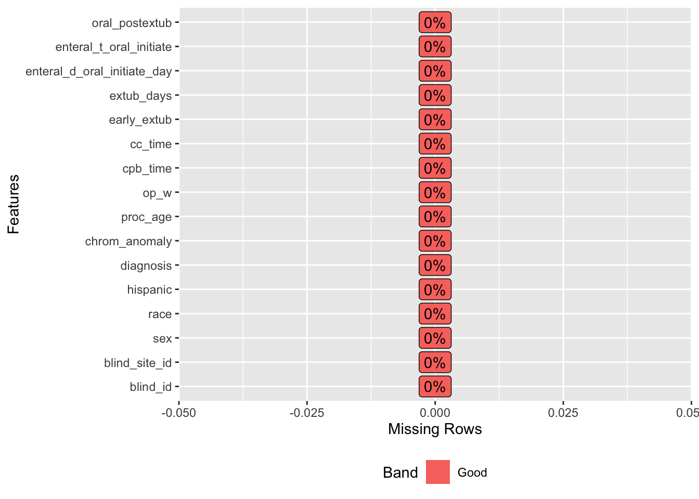
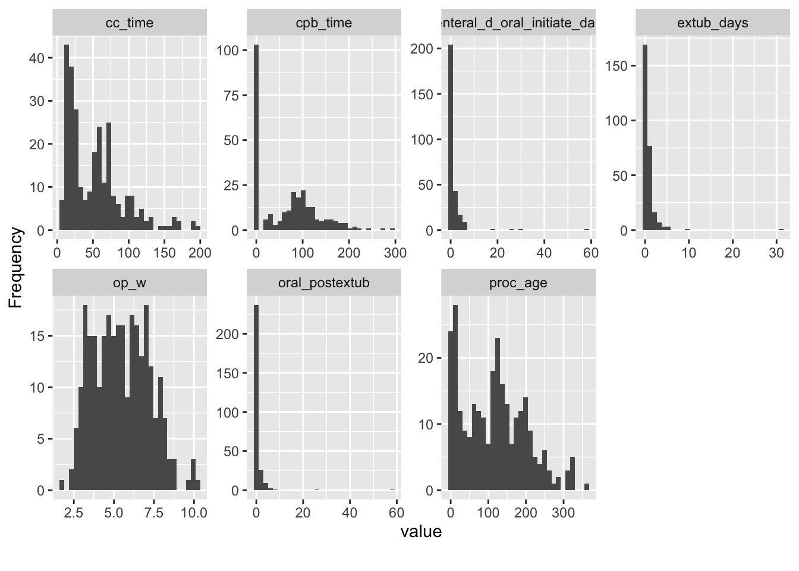
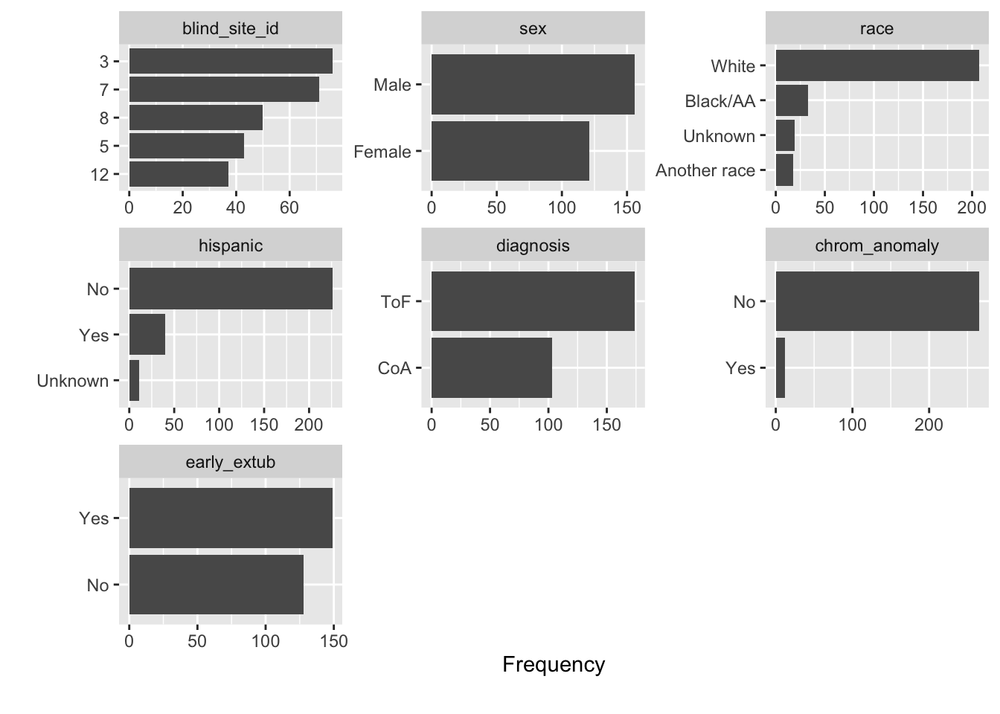

# Read in data
demographics <- read_csv("./data/demographics.csv")
info <- read_csv("./data/general_information.csv")
med_review <- read_csv("./data/medical_review.csv")
op2 <- read_csv("./data/operative_information.csv")
postop <- read_csv("./data/postoperative_information.csv")# Select first round of desired variables from each data set
demographics <- demographics %>%
dplyr::select(BLIND_ID, WEIGHT, SEX, RACE, RACE_W, RACE_B, other_race, ETHNICITY)
info <- info %>%
dplyr::select(BLIND_ID, BLIND_SITE_ID)
med_review <- med_review %>%
dplyr::select(BLIND_ID, PROC_AGE, DIAG, CHROM_22, CHROM_21, CHROM_18, CHROM_CRI, CHROM_OTH)
op2 <- op2 %>%
dplyr::select(BLIND_ID, OP_W, INTUB_Y_N, intub_d_day, INTUB_T, INTUB_OR_T, BYPASS, NO_XCLAMP_T, XCLAMP_T, CPB_T, EXTUB_OR_YN, EXTUB_OR_T, EXIT_T)
postop <- postop %>%
dplyr::select(BLIND_ID, icu_d_day, ICU_T, EXTUB30_ICU_YN, EXTUB30_ICU_T, EXTUB6_ICU_YN, EXTUB6_T, extub_d_day, EXTUB_T, RE_INTUB, re_intub_d_day, RE_INTUB_T, re_extub_d_day, RE_EXTUB_T, ENTERAL, enteral_d_initiate_day, ENTERAL_T_INITIATE, ORAL, enteral_d_oral_initiate_day, ENTERAL_T_ORAL_INITIATE, TUBE)# Store data sets as a list
data_list <- list(demographics, info, med_review, op2, postop)
# Join data sets
df_full <- data_list %>%
reduce(inner_join, by = "BLIND_ID") %>%
janitor::clean_names() %>% # Clean up variable names
rename(race_known = race) # Rename to prevent confusion
# Make a single race variable
df_full <- df_full %>%
mutate(race = case_when(
race_w == "Yes" ~ "White",
race_b == "Yes" ~ "Black/AA",
other_race == "Yes" ~ "Another race",
)) %>%
mutate(race = ifelse(is.na(race), "Unknown", race))
# Make y/n chromosomal anomaly variable
df_full <- df_full %>%
mutate(chrom_anomaly = case_when(
chrom_22 == "Yes" ~ "Yes",
chrom_21 == "Yes" ~ "Yes",
chrom_18 == "Yes" ~ "Yes",
chrom_cri == "Yes" ~ "Yes",
chrom_oth == "Yes" ~ "Yes",
TRUE ~ "No"
))
# Create early extubation (y/n) variable
df_full <- df_full %>%
mutate(early_extub = case_when(
extub_or_yn == "Yes" ~ "Yes", # if extubated in the OR
extub30_icu_yn == "Yes" ~ "Yes", # if extubated within 30 minutes of ICU arrival
extub6_icu_yn == "Yes" ~ "Yes", # if extubated within 6 hours
TRUE ~ "No"
))
# Check if any infants in the early extubation group were reintubated
d <- df_full %>%
dplyr::select(early_extub, re_intub) %>%
filter(early_extub == "Yes")
summary(as.factor(d$re_intub)) # There are 5 infants who were reintubated after early extubation## No Yes
## 159 5# Modify early extubation variable to be "No" if infants were reintubated
df_full <- df_full %>%
mutate(early_extub = case_when(
re_intub == "Yes" ~ "No",
TRUE ~ early_extub
))
# Explore NAs in days to initial extubation variable
d <- df_full %>%
dplyr::select(extub_d_day, early_extub) %>%
filter(early_extub == "Yes")
# If early extubation is "Yes", then the days to extubation variable is NA
# which essentially means that they were all extubated on the day of surgery.
# Therefore...
# Create new days to extubation variable where these NAs are changed to 0 days
df_full <- df_full %>%
mutate(extub_days = case_when(
early_extub == "Yes" ~ 0,
TRUE ~ extub_d_day
))
# For those who were reintubated, replace value with days to final (second) extubation
df_full <- df_full %>%
mutate(
extub_days =
ifelse(re_intub == "Yes", re_extub_d_day, extub_days)
)
# Check
d <- df_full %>%
dplyr::select(extub_d_day, early_extub, extub_days, re_intub, re_extub_d_day) %>%
filter(re_intub == "Yes")
# Create variable for days to first oral feeding after extubation
df_full <- df_full %>%
mutate(oral_postextub = (enteral_d_oral_initiate_day - extub_days))
# Explore NAs in days to first oral feed variable
d <- df_full %>%
dplyr::select(oral, enteral_d_oral_initiate_day, oral_postextub, extub_d_day, early_extub, extub_days, re_intub, re_extub_d_day) %>%
filter(is.na(oral_postextub))
# There are 36 NAs due to those infants not starting oral feeding before ICU discharge
# Remove NAs (didn't feed orally before ICU discharge) and 9 cases with implausible values for time to first oral feed (negative value)
df_full <- df_full %>%
filter(oral_postextub >= 0)
# n = 277
# Create variable with max cross clamp time
df_full <- df_full %>%
mutate(cc_time = pmax(no_xclamp_t, xclamp_t, na.rm = TRUE))
# Modify cardiopulmonary bypass (CPB) time variable to be 0 if there was no CPB used
df_full <- df_full %>%
mutate(cpb_time = case_when(
bypass == "No" ~ 0,
TRUE ~ cpb_t
))
# Rename levels
df_full <- df_full %>%
mutate(
ethnicity = factor(ethnicity), # ethnicity
hispanic = fct_recode(ethnicity,
"Yes" = "Hispanic or Latino/Latina",
"No" = "Not Hispanic or Latino/Latina",
"Unknown" = "Unknown"
)
) %>%
mutate(
diag = factor(diag), # diagnosis
diagnosis = fct_recode(diag,
"CoA" = "Coarctation of Aorta Repair",
"ToF" = "Tetralogy of Fallot Repair"
)
)
# Select variables for final data set
df_final <- df_full %>%
dplyr::select(blind_id, blind_site_id, sex, race, hispanic, diagnosis, chrom_anomaly, proc_age, op_w, cpb_time, cc_time, early_extub, extub_days, enteral_d_oral_initiate_day, enteral_t_oral_initiate, oral_postextub)
# Change variables to factors
# Create vector with columns to change to factors
cols <- c("blind_id", "blind_site_id", "sex", "race", "hispanic", "diagnosis", "chrom_anomaly", "early_extub")
# Change all to factors
df_final %<>% mutate_at(cols, factor)
# Write .rds
write_rds(df_final, "./source/df_final.rds")
write_csv(df_final, "./source/df_final.csv")plot_missing(df_final)
# No missingnessplot_histogram(df_final) # look at continuous distribution
plot_bar(df_final) # look at categorical distribution